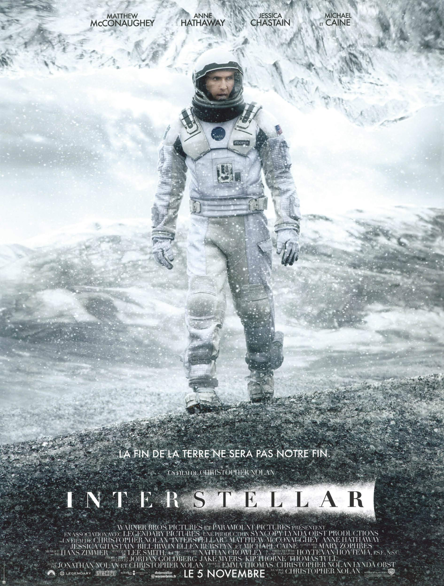

Interstellar
Dans un futur proche, la Terre devient inhabitable. Un groupe d'explorateurs traverse un trou de ver afin de rechercher une nouvelle planète capable d'accueillir l'humanité.
Voir les détails
Dans un futur proche, la Terre devient inhabitable. Un groupe d'explorateurs traverse un trou de ver afin de rechercher une nouvelle planète capable d'accueillir l'humanité.
Voir les détails